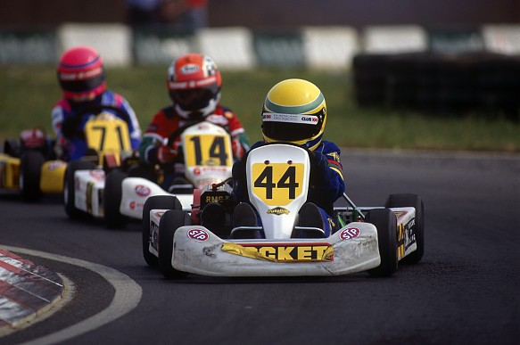

Sir Lewis Carl Davidson Hamilton is a British racing driver. He currently competes in Formula One for Mercedes, having previously driven for McLaren from 2007 to 2012. In Formula One, Hamilton has won a joint-record seven World Drivers' Championship titles (tied with Michael Schumacher), and holds the records for the most wins (103), pole positions (103), and podium finishes (182), among others.
Hamilton began karting in 1993 and quickly began winning races and cadet class championships. Two years later, he became the youngest driver to win the British cadet karting championship at the age of ten. That year, Hamilton approached McLaren Formula One team boss Ron Dennis at the Autosport Awards for an autograph and said: "Hi. I'm Lewis Hamilton. I won the British Championship and one day I want to be racing your cars."
